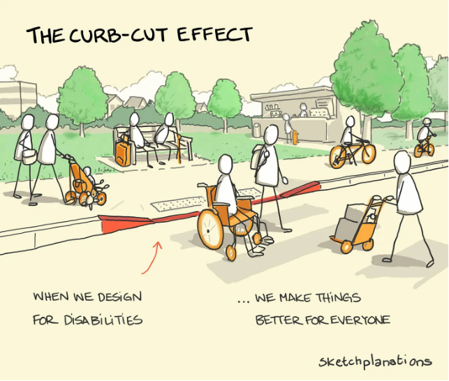

With the social model of disability in mind, we can begin to consider our design-centered approach to digital accessibility. There are two main approaches to designing for disabilities that we will consider: accessible design and universal design.
Accessible design addresses the needs of disabled users through the addition of accessibility features— for example, a wheelchair ramp added at the back of a building. This design choice is a good way to adapt older designs that were not originally created with accessibility in mind.
Caption: A university building with stairs leading to the main entrance has a sign directing wheelchair users to the accessible entrance in the back of the building. Photo by Stacy Shang.
On the other hand, universal design takes into account the needs of the population as a whole, including people with disabilities, early in the design process. Take curb cuts, for example. Originally designed to make sidewalks more accessible for wheelchair users, it is now common to see a wide range of people taking advantage of curb cuts— from pedestrians lugging suitcases to parents pushing strollers. Universal design benefits users with disabilities without the need to create features that are separate from those used by able-bodied users.

Caption: The "curb-cut effect" is a classic example of universal design. Illustration by Jono Hey on Substack.